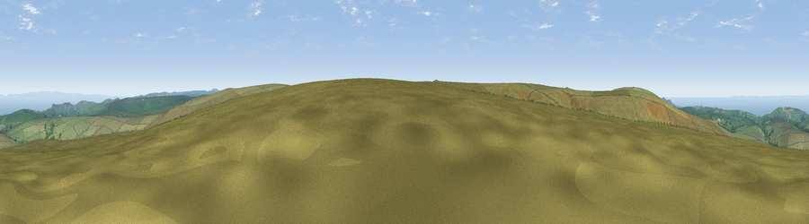

Viewpoint near Challacombe
#6292 in England · top 18% of its area beats it · near Challacombe · open accessWhere it is
The exact computed spot (SS 71775 43100). Click the marker for map links.
Public access: this spot lies on mapped open-access land (CRoW Act 2000) — you may roam here on foot. Computed from Natural England's CRoW access layer and OpenStreetMap rights of way — not the legal definitive map. Always verify locally.
The view, rendered

A 360° render of this exact spot computed from the terrain model, tree cover and land cover — summer colours, afternoon light, calibrated against photographs of famous viewpoints. Real trees, hedges and buildings will differ in detail.
The panorama
Grey silhouette: terrain skyline in each direction (720 bearings, Earth curvature and refraction included). Dashed green: skyline with trees (+15 m) and buildings (+8 m) as obstacles. Blue strip: how far the ground is visible on each bearing.
Where the view opens
Wedge length = distance to the farthest visible ground on that bearing (vegetation-aware). Rings at 10, 25 and 50 km.
What fills the view
83% grassland · 13% water · 3% woodland ·
Angular shares of the visible panorama (visual magnitude), not map area. Landscape diversity 0.26 (0–1 Shannon).
Key numbers
More beautiful places nearby
The staircase of upgrades: each row has a higher view potential than everything closer. Driving times are estimates from straight-line distance, calibrated against real road routing — check an actual route before setting out.
| Place | Direction | Drive | Score |
|---|---|---|---|
| Viewpoint near Challacombe | SW · 1 km | ~3 min | 69.1 |
| Stone Setting | W · 2 km | ~5 min | 74.5 |
| Viewpoint near Challacombe | W · 2 km | ~6 min | 77.1 |
| Viewpoint near Lynmouth | NNE · 6 km | ~12 min | 81.0 |
| Viewpoint near Lynbridge | N · 6 km | ~12 min | 81.3 |
| Lynton Hill | NNW · 6 km | ~12 min | 82.7 |
| Viewpoint near Lynmouth | N · 6 km | ~13 min | 83.2 |
| Viewpoint near Lynton | NNW · 6 km | ~13 min | 84.8 |
51.17272, -3.83557 · source: screening · position refined by local search. Computed location — check access rights before visiting.